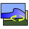

Desktop-Hintergrund
Zum Verständnis dieses Artikels sind folgende Seiten hilfreich:
Hintergrundbilder¶
KDE¶
Unter Plasma 5 findet man die KDE-Hintergrundbilder unter ~/.local/share/wallpapers/
Gnome¶
Animierte Hintergrundbilder¶
 Eine Funktion, um das Hintergrundbild auf dem Desktop automatisch auszuwechseln, ist nicht in jeder Desktop-Umgebung enthalten. Gerade Fenstermanager, die keine eigenen Themen unterstützen oder keinen Hintergrund zeichnen können, benötigen Nachhilfe. Die verfügbaren Möglichkeiten sollen hier gezeigt werden. Die entsprechenden Pakete müssen gegebenenfalls vorher installiert [1] werden.
Eine Funktion, um das Hintergrundbild auf dem Desktop automatisch auszuwechseln, ist nicht in jeder Desktop-Umgebung enthalten. Gerade Fenstermanager, die keine eigenen Themen unterstützen oder keinen Hintergrund zeichnen können, benötigen Nachhilfe. Die verfügbaren Möglichkeiten sollen hier gezeigt werden. Die entsprechenden Pakete müssen gegebenenfalls vorher installiert [1] werden.
Die früher unter Unity und GNOME 2 möglichen XML-Slideshows werden ab Ubuntu 11.10 nicht mehr unterstützt. Komfortable Alternativen sind Wallch oder die GNOME-Shell-Erweiterung Backslide  . Wer auf eine grafische Oberfläche verzichten kann, wählt eine der vorhandenen Skript-Lösungen.
. Wer auf eine grafische Oberfläche verzichten kann, wählt eine der vorhandenen Skript-Lösungen.
Programme¶
Cortina¶
Cortina ist eine Wallpaper Manager-Anwendung für den GNOME-Desktop. Das Programm kann das Hintergrundbild von Zeit zu Zeit, während einer Sitzung oder zu Beginn einer Sitzung, wechseln.

DesktopNova¶
DesktopNova (früher gWallpapers) ist ein Programm für GNOME und Xfce, mit dem man das Hintergrundbild automatisch wechseln lassen kann.

Feh¶
Feh ist ein kleiner Grafik-Betrachter für die Konsole [2]. Er kann auch einen Hintergrund zeichnen:
feh --bg-scale Bild.jpg
ImageMagick¶
ImageMagick ist eine Sammlung von kleinen Programmen zum Manipulieren von Bildern. Das Programmpaket
imagemagick
 mit apturl
mit apturl
Paketliste zum Kopieren:
sudo apt-get install imagemagick
sudo aptitude install imagemagick
muss dazu installiert werden. In diesem Paket ist auch das Programm display enthalten, welches auch Hintergrundbilder setzen kann. Dies erledigt man zum Beispiel im Terminal [2] mit
display -window root Bild.jpg
Hinweis:
Die "falsche" Transparenz des GNOME-Terminals, also nicht die direkt vom XServer angebotene Transparenz, funktioniert mit display nicht. Dies geht nur mit Feh.
Izulu¶
Mit diesem kleinen Programm lässt sich der Desktop-Hintergrund abhängig vom aktuellen Wetter automatisch ändern. Mehr Informationen im Artikel zu Izulu.
Telak¶
Telak ist ein kleines Programm, mit dem man diverse Bilder auf dem Desktop anzeigen kann. Dabei ist es egal, ob diese von einer Webcam oder aus einem Ordner der Festplatte stammen. Telak sorgt dafür, dass die Bilder automatisch aktualisiert werden.
Das zu installierende Paket heißt
telak (universe)
mit apturl
Paketliste zum Kopieren:
sudo apt-get install telak
sudo aptitude install telak
Die Konfiguration findet in der Datei ~/.telak/telakrc statt [3]. Als Vorlage kann die Datei /usr/share/doc/telak/examples/telakrc.sample benutzt werden:
mkdir ~/.telak cp /usr/share/doc/telak/examples/telakrc.sample ~/.telak/telakrc
Beispiel¶
Ein Webcam-Bild wird mit einer Größe von 300x200 dargestellt und alle 30 Minuten aktualisiert:
[wannsee] url = http://www.berlin.de/webcams/wannsee/webcam.jpg x = 250 y = 50 width = 300 height = 200 refresh = 1800
Variety¶
Variety ist ein Projekt, dass einen automatischen Wechsel des Hintergrundbilds mit Motiven aus unterschiedlichen Quellen ermöglicht.
Wallpapoz¶
Wallpapoz sorgt dafür, dass man jeder virtuellen Arbeitsfläche oder virtuellem Desktop ein eigenes Hintergrundbild zuordnen kann. Zudem bietet das Programm die Möglichkeit, die Hintergrundbilder automatisch in Intervallen auszutauschen.
Wallpapoz wurde für den GNOME-Desktop entwickelt und besteht aus zwei Programmen: einem Hintergrundprogramm ("daemon"), der den Bildwechsel überwacht, und einem Konfigurationsprogramm. Compiz und damit die Desktop-Oberfläche Unity wird nicht unterstützt.
Wallch¶
Wallch (Wallpaper changer) ist ein Programm, das im Hintergrund läuft und automatisch das Hintergrundbild wechselt. Es können einzelne Bilder oder auch ganze Ordner hinzugefügt werden. Das Programm wechselt entweder in einem festgelegten Intervall oder nach einem zufällig gewählten Zeitraum. Zusätzlich kann Wallch statt eines Bilds ein "Live Earth Wallpaper" anzeigen. Dazu wird eine Internetverbindung benötigt. Wallch funktioniert einwandfrei mit der GNOME Shell und Unity.

Wally¶
Wally ist ein Programm zum Wechseln des Hintergrundbilds. Dabei kann neben der Anzeige eigener Bildern auch in diverse Online-Bilderdiensten nach interessanten Motiven gesucht werden. Es ist im Software-Center unter dem Namen wally enthalten. Für die Benutzeroberfläche wird die Grafikbibliothek Qt verwendet.
Xplanet¶
Im Gegensatz zu den anderen hier genannten Programme kann Xplanet verschiedene Planeten (und deren Monde) als Desktop-Hintergrund anzeigen. Weitere Informationen im Artikel Xplanet.
Skript-Lösungen¶
Perl¶
Ab Ubuntu 11.04 kann man eine Hintergrund-Diashow für Unity oder GNOME 3 auch mittels eines Perl- oder Python-Skripts starten. Dazu muss folgendes Skript in dem Autostart aufgenommen werden:
1 2 3 4 5 6 7 8 9 10 11 12 13 14 15 16 17 18 19 | #!/usr/bin/perl -w use strict; use warnings; my $searchPath = '~/Bilder/'; # Hier den entsprechenden Pfad zu den Hintergrundbildern angeben my $switchTime = 300; # Zeit bis zum nächsten Wechsel des Hintergrunds (in Sekunden) my @photos = `find $searchPath -type f | grep [jJ][pP][eE]*[gG]`; chomp(@photos); my $photo; while(1) { $photo = $photos[rand($#photos)]; # ab Ubuntu 11.04: `gsettings set org.gnome.desktop.background picture-uri "file:///$photo"`; # bis Ubuntu 10.10: # `gconftool-2 -t str -s /desktop/gnome/background/picture_filename "$photo"`; sleep($switchTime); } |
Python¶
Alternativ ist hier ein Python-Script (auch für Xubuntu und Lubuntu geeignet):
1 2 3 4 5 6 7 8 9 10 11 12 13 14 15 16 17 18 19 20 21 22 23 24 25 26 | #!/usr/bin/env python import random import time import os import sys intervall = 300 # Intervall in Sekunden dir = "~/Hintergrundbilder/" # Bilderverzeichnis find = os.popen("find " + dir + " -xtype f") photos = find.readlines() find.close() random.seed() while True: if os.getppid() == 1: # nach dem Abmelden beenden sys.exit() photo = random.choice(photos).strip() # je nach Desktop-Umgebung bitte anpassen! os.system("gsettings set org.gnome.desktop.background picture-uri 'file://" + photo + "'") # ab Ubuntu 11.04 #os.system("gconftool-2 -t str -s '" + photo + "'") # bis Ubuntu 10.10 #os.system("xfconf-query -c xfce4-desktop -p /backdrop/screen0/monitor0/image-path -s '" + photo + "'") # Xubuntu #os.system("pcmanfm -w '" + photo + "'") # Lubuntu / LXDE time.sleep(intervall) |
Wechsel nach Tageszeit¶
Ein weitere Möglichkeit wäre ein Shell-Skript für Unity oder GNOME 3, das die Bilder je nach Tageszeit austauscht. Dazu kann man das folgende Skript anpassen oder erweitern, im Verzeichnis /usr/local/bin/ speichern und ausführbar machen. Das Script sollte man anschließend als Cronjob einrichten, der z.B. jede Stunde oder alle zehn Minuten läuft, je nachdem, zu welchen Uhrzeiten man Wechsel eingetragen hat. Grafisch kann man das mit GNOME Schedule erledigen. Wichtig ist, dass man bei dem Aufruf den Bildschirm angibt, für den das Script gilt: DISPLAY=:0 /usr/local/bin/update_background.sh
#!/bin/bash
TIME=`/bin/date +%k%M`
if [ $TIME -ge 7000 ] & [ $TIME -lt 1100 ];
then /usr/bin/gsettings set org.gnome.desktop.background picture-uri file:///home/[user]/Wallpaper/morgens.jpg
elif [ $TIME -ge 1100 ] & [ $TIME -lt 1430 ];
then /usr/bin/gsettings set org.gnome.desktop.background picture-uri file:///home/[user]/Wallpaper/tags.jpg
elif [ $TIME -ge 1430 ] & [ $TIME -lt 1800 ];
then /usr/bin/gsettings set org.gnome.desktop.background picture-uri file:///home/[user]/Wallpaper/abends.jpg
else /usr/bin/gsettings set org.gnome.desktop.background picture-uri file:///home/[user]/Wallpaper/nachts.jpg
fiProblembehebung¶
Sollte das Hintergrundbild nicht angezeigt werden, so kann das an einer falschen Einstellung liegen. Um das zu ändern, den dconf-Editor öffnen und unter org -> gnome -> settings-daemon -> plugins -> background das Häckchen bei active setzen. Oder im Terminal[2] mit dem Befehl:
gsettings set org.gnome.settings-daemon.plugins.background active true
Links¶
Animated Wallpaper Adds Live Backgrounds To Linux Distros
- Blogbeitrag, 05/2015Slidewall - Live Wallpaper Application
- Blogbeitrag, 01/2014Pictoric
- Hintergrundbild automatisch wechseln (Diaschau-Generator)Multi Monitor Desktop Wallpaper for Gnome
- Ein Bild für mehrere Monitore (Skriptlösung)Redshift - abhängig von der Tageszeit die Farbtemperatur des Monitors automatisch anpassen
RAVEfinity
- Sammlung von urheberrechtsfreien HintergrundbildernTapetenwechsel - verschiedene Wallpaper nutzen unter GNOME und XFCE
 - Artikel LinuxUser 12/2008
- Artikel LinuxUser 12/2008
- Erstellt mit Inyoka
-
 2004 – 2017 ubuntuusers.de • Einige Rechte vorbehalten
2004 – 2017 ubuntuusers.de • Einige Rechte vorbehalten
Lizenz • Kontakt • Datenschutz • Impressum • Serverstatus -
Serverhousing gespendet von